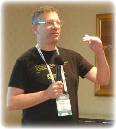

An update on fanotify
In a filesystem-track session at the 2026 Linux Storage, Filesystem, Memory Management, and BPF Summit, Amir Goldstein updated attendees on the fanotify filesystem-event monitoring subsystem. He wanted to describe changes that had come in the last year or so, as well as upcoming features and some remaining challenges in his efforts to use fanotify for hierarchical storage management (HSM). Fanotify is the user-space API for monitoring files, directories, and filesystems for events of various sorts (e.g. opening or deleting a file).
Review
The FAN_PRE_ACCESS event is a relatively new "pre-content" event that can be used to allow an HSM system to intercept accesses to a file and populate the file locally (from the cloud, say) in a user-space callback. It was different from the existing permission event because it provides range information so that only the part of the file that will be accessed can be populated. This event was merged in early 2025, he said. The hooks to emit events for read() and write() were available early on; Josef Bacik contributed a hook for page faults, which would allow files that are mapped using mmap() to be lazily populated when they are accessed.

Unfortunately, "this backfired after it got merged
"; some
regressions were found so the page-fault hook has been backed out.
Instead, the file needs to be populated at mmap() time, which
still fits with the description
of the event in the man page, Goldstein said. The event is documented
to happen sometime before the first access to the data; the page fault
happens right when the data is being accessed, so it might be the preferred
delivery time, but the mmap() must occur earlier, so it still
qualifies.
The ability to watch mount-tree events was merged for Linux 6.15. It is a feature that has come up at LSFMM+BPF before, most recently at the gathering in 2024. Miklos Szeredi developed the feature, which is complementary to the listmount() system call; it allows a user-space tool to monitor a mount namespace and receive events about mount activity. It required adding watches to mount namespaces, which is a new kind of object for fanotify to handle; previously, it only worked with filesystem objects, such as inodes and superblocks.
Support for watching mount namespaces and superblocks inside user namespaces was added for the 6.16 kernel. Filesystems that are mounted inside unprivileged user namespaces can now be watched by users with privileges in the namespace, rather than needing privileges in the top-level user namespace.
Another feature that Szeredi added is a watchdog for
permission events that have stalled. If the user-space daemon (usually
an anti-virus tool of some sort) does not reply to a permission event it
has received, a kernel message is emitted to facilitate debugging daemon
deadlocks.
"Last but not least
", Goldstein said, Jan Kara has made some changes
to the management of the watched inodes, which addressed a use-after-free
race.
Up next
Goldstein moved on to features that have been posted but not yet merged.
Restartable
permission events is a feature that is "pretty mature
" at this
point. Users and administrators of systems who are monitoring permission
or pre-content events want to be sure that
files are not accessed if the daemon has crashed or is being restarted.
Instead of a single file descriptor (fd) that is used for communication between the kernel and the daemon, there would be two. One is the control fd, which is used to configure the watches; it can also ensure that events will not be lost. The other is the queue fd, which is used to receive and respond to events. The control fd is kept open by a separate process (such as a file descriptor store) and can be used by a new daemon process to query for the queue fd; the new daemon can then read the pending events that the kernel has been waiting on for a response.
Christian Brauner wondered why two fds were needed; if today's single fd were put into an fdstore, couldn't that be made to work? Goldstein and Kara agreed that it was possible, but that the closing of the queue fd when the daemon crashes or restarts provides an easy way to recognize which events have not been replied to. An API change was required to support watches on new types of objects in any case, Goldstein said, and it could be argued that there should have been two fds from the outset.
Since there is now the ability to watch a mount namespace, developers also want to be able to watch the namespace tree for events like namespace creation and removal. Brauner has added the listns() system call that allows user space to list the existing namespaces, so Goldstein has proposed a way to monitor the namespace tree with fanotify. The API is still a work in progress, he said, but the basic idea is that there are user and process ID (PID) namespace trees that have nodes where watches can be placed. Those watches will provide an event stream on changes that correspond to when the output of listns() would change.
There have been requests to add the functionality for all types of namespace
tree. "Technically, it's not so exciting
", but it may be important
for user space, he said. As part of this work, the fanotify developers
have separated the API to put the namespace watches into their own API
realm; the existing names for filesystem events will not work for "the
new universe
" of watches for namespaces.
Brauner cautioned about a problem he had run into when developing listns(). Namespaces can get pinned into memory in a wide variety of ways and can linger long after user space is no longer able to access the namespace. In fact, due to task-credential caching, a user namespace on a mostly idle 512-CPU system can linger for hours, he said, after the namespace is effectively dead. He added an "active" reference count in addition to the regular reference count so that listns() would not report the unreachable namespaces; when that count reaches zero, the namespace is no longer reachable. He suggested that the destruction events use that mechanism rather than waiting for all of the namespace references to disappear.
Goldstein said that fanotify would follow the path that listns() used. Brauner thought that it might also be valuable to have another event when the memory has been freed and the namespace is truly gone. This is part of the reason that the separate filesystem and namespace universes for fanotify are being developed, Kara said; it will allow different kinds of events for the two disparate streams without overflowing the event mask. Goldstein wanted to be clear that the two universes are completely separate, event streams can contain either filesystem or namespace events, but not both.
Brauner said that he is happy that the new features are being worked on, in
part because he sees it as a replacement for the "proc connector", which is a "really
terrible API
" that allows tracking of events like fork and exec. When
he added the pidfd API, he thought
adding "a limited and well-defined set of fanotify events
" would be
a natural extension to it.
The ability to watch control groups is another feature that has been
requested, Goldstein said. He started working on that as part of a bug fix
for watches on kernfs-using filesystems.
Because there is no way to watch control groups and namespaces, developers
have been watching cgroupfs and nsfs, "which are not a true
representation of the kernel tree
". Inodes for the control groups and
namespaces may or may not exist in those filesystems, so those kinds of
watches are unreliable, though they mostly work, so they are used. Whether
those events belong with the other namespace events is up in the air, but
there is plenty of room to add new event types because of the API split;
there are 32 new bits to be used, "so we are going to be less stingy
" now.
Kara described a feature that he has been working on to reduce the memory overhead when there are recursive watches of a tree with millions of directories. Currently, each watch increments the reference count of the inode, which pins it into memory; inodes are more than 1KB in size, so that adds up to the point that the filesystem sometimes asks fanotify to clean up the references so it can reclaim the inodes.
His RFC patches will stop taking a reference to the inode and instead track what is watched using an inode identification value, which is not necessarily the inode number but is conceptually similar, Kara said. That way, inodes can be reclaimed as needed and the watch can be reconnected to it when it is read back into memory. The inode mark, which is where the watch information is stored, is lightweight (30 bytes or so) compared to the inode.
There was some discussion of what the inode identification value might be. For some filesystems, the inode number itself will work, but for others fanotify may need to ask the filesystem what value to use to identify the inode when it is loaded into memory. That value might be a file handle or something else.
HSM and fanotify
Goldstein "stole" some time from the next session, which was his own for an overlayfs update, to discuss the HSM use case. There were a number of nasty user-space deadlocks that needed to be avoided when adding the pre-content event that is used to populate local files. The page-fault problem that he noted earlier meant that code needed to be reverted due to deadlocks that can occur when a file is mapped using mmap() and part of that mapped memory is used as a buffer to write to another file. That causes a page fault for the mapped range, which deadlocks when the HSM daemon tries to populate it. The same kind of problem can occur for FUSE or NFS, he said, but the fanotify developers decided to revert the page-fault hooks.
Beyond that, he had some follow-up pre-content patches for directories, so that reading a directory or looking up a file in it will cause an event that will allow the daemon to populate the needed data. Those patches also suffer from deadlock problems and it is difficult to find ways to avoid them.
The same kinds of problems are showing up for the file-backed feature for EROFS; it allows EROFS to use a file as its backing store, rather than a loop device. The backing file could be lazily populated using pre-content events, but there are deadlock problems when populating metadata for EROFS, similar to the page-fault problems for HSM with fanotify.
Since filesystem freezing, which is a feature used by LVM snapshots and XFS
scrub, can cause these deadlocks, there is a proposal to disable freezing.
"Not everybody is using that, it is kind of a niche case, and
pre-content is also a niche case
" so the overlap between users of those
features is probably non-existent. Goldstein was reminded that filesystem
freezing is also used by the power-management subsystem, but Brauner said
that filesystems needed to opt into being frozen that way. Only the efivarsfs,
"which you don't care about
", always opts into the freezing feature.
There are still unresolved problems in freezing filesystems for suspend, Brauner continued. There are ordering problems between freezing tasks and filesystems that can also lead to deadlocks, which is why filesystems need to opt in. It may be possible to add mount options for filesystems that will be used with pre-content events so that they do not opt into freezing, though it was not entirely clear to attendees how well that would work in practice.
Another issue that needs to be resolved is that the pre-content events are emitted every time there is a read, even if the region has already been populated, Goldstein said. The plan is to create a way for a BPF program to track which pieces of the files have been populated and to suppress events that are redundant, but that has not yet been implemented.
| Index entries for this article | |
|---|---|
| Kernel | fanotify |
| Conference | Storage, Filesystem, Memory-Management and BPF Summit/2026 |
Posted Jun 16, 2026 9:00 UTC (Tue)
by meven-collabora (subscriber, #168883)
[Link]
Yet, file managers, file indexer would love to benefit from those.
Those have to implement BPF, or privileged helpers.
No filesystem watcher for userspace out of the box
Both are pretty common cases.
https://amandeepsp.github.io/blog/fs-watcher/